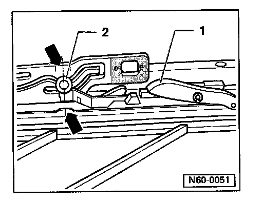
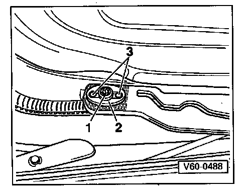

Installation

Sunroof Glass Panel Installation
^ Panel must be in "0" position (panel closed)
^ Locating hooks -1- must be located in guide rails
^ Pin -2- must be aligned within marks or notches (arrows)
If not, check and adjust parallel running. Sunroof Panel Height
- Place sunroof in position from above, and install securing screws (link/panel).
- Lightly tighten securing screws (Torx T25).
Notes:

^ When tightening the Torx T25 screw - 1- make sure that the adjusting plate -2- is correctly located.
^ The guide pins -3- must be in the elongated holes of the adjusting plate -2-.
^ After adjusting panel height, tighten securing screws -1-. Tightening torque: 6 Nm (53 in. lb).